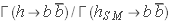

Validation and Applications
In order to validate  v1.0, we reproduce some figures of refs. Nathaniel, BUAP
v1.0, we reproduce some figures of refs. Nathaniel, BUAP
Contours of  for the SM‐like Higgs boson as a function of and
for the SM‐like Higgs boson as a function of and  in Type 1 2HDM (left) and Type 2 2HDM (right). The Type 3 model is parametrically similar to Type 1, while Type 4 is similar to Type 2. Thick black lines denote the SM value.
in Type 1 2HDM (left) and Type 2 2HDM (right). The Type 3 model is parametrically similar to Type 1, while Type 4 is similar to Type 2. Thick black lines denote the SM value.
Contours of  for the SM‐like Higgs boson as a function of
for the SM‐like Higgs boson as a function of  and in Type 1 2HDM (left) and Type 2 2HDM (right). The Type 3 model is parametrically similar to Type 1, while Type 4 is similar to Type 2. Thick black lines denote the SM value.
and in Type 1 2HDM (left) and Type 2 2HDM (right). The Type 3 model is parametrically similar to Type 1, while Type 4 is similar to Type 2. Thick black lines denote the SM value.
Contours of  for the SM‐like Higgs boson as a function of and in Type 1 2HDM (left) and Type 2 2HDM (right). The Type 3 model is parametrically similar to Type 1, while Type 4 is similar to Type 2. Thick black lines denote the SM value.
Contours of for the SM‐like Higgs boson as a function of and in Type 1 2HDM (left) and Type 2 2HDM (right). The Type 3 model is parametrically similar to Type 1, while Type 4 is similar to Type 2. Thick black lines denote the SM value.